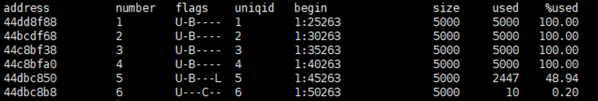

现象描述
- Informix/GBase 8s执行备份任务时，页面报错，提示“执行数据库的数据备份失败”。
- Informix/GBase 8s执行恢复任务时，页面报错，提示“执行恢复任务失败”。
可能原因
数据库日志存储空间被占满，导致无法执行数据库命令，影响了正常业务。
处理步骤
- 登录Informix/GBase 8s主机。
- Informix数据库执行su - informix命令切换为Informix数据库用户，GBase 8s数据库执行su - gbasedbt命令切换为GBase 8s数据库用户。
- 执行onstat -l命令，查看数据库状态。

- 执行onbar -b -l -c命令，对日志空间进行清理。

如果是主备集群，在主备节点均需对日志空间进行清理。
- 重新执行备份或恢复任务。
建议与总结
无
参考信息
无。